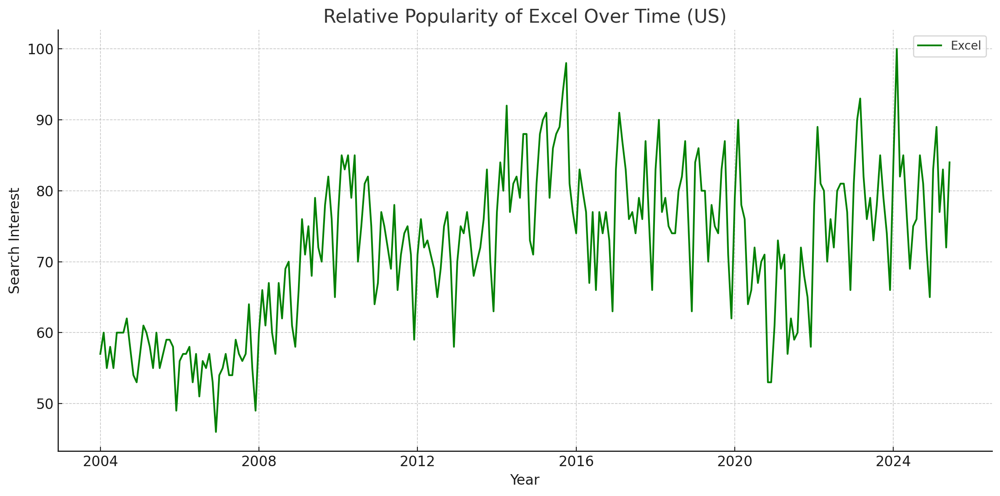
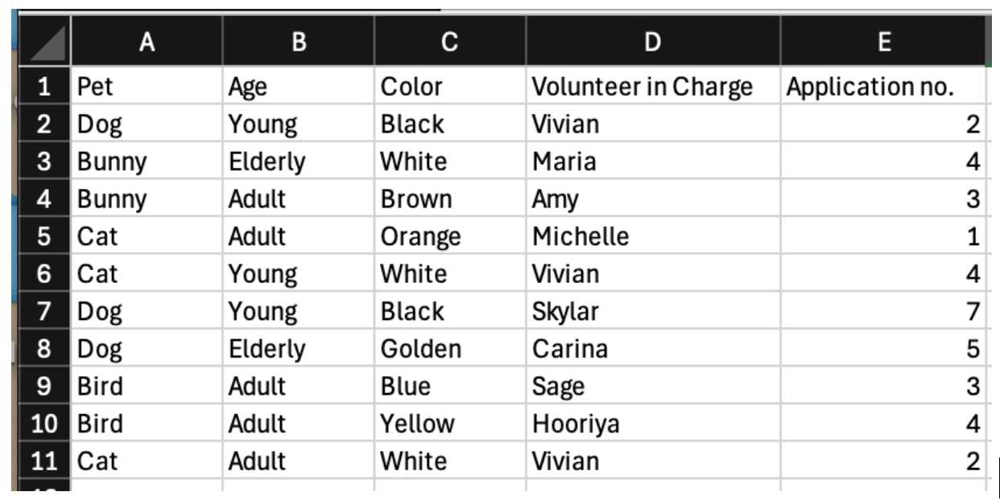
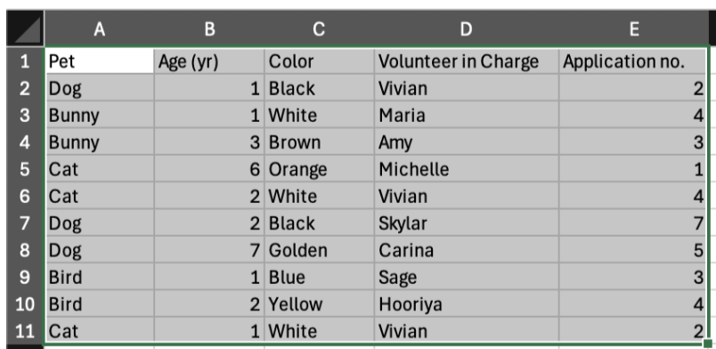
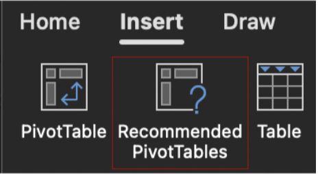
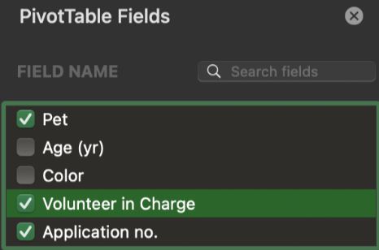
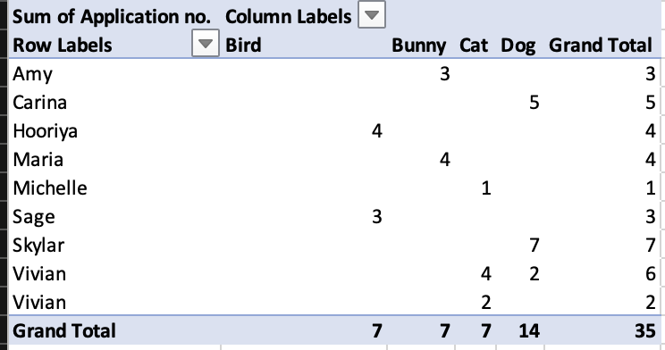
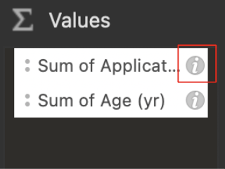
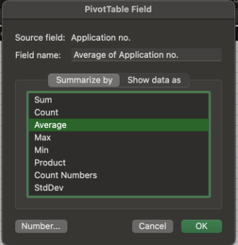
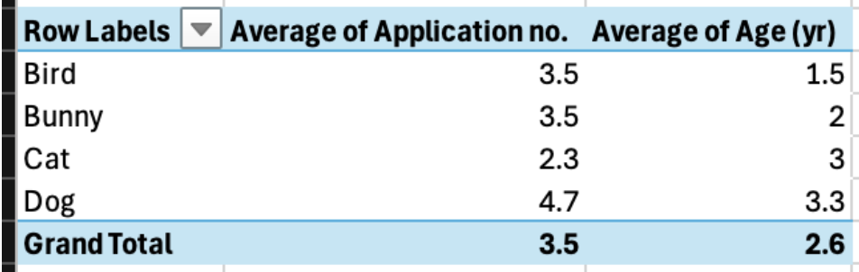
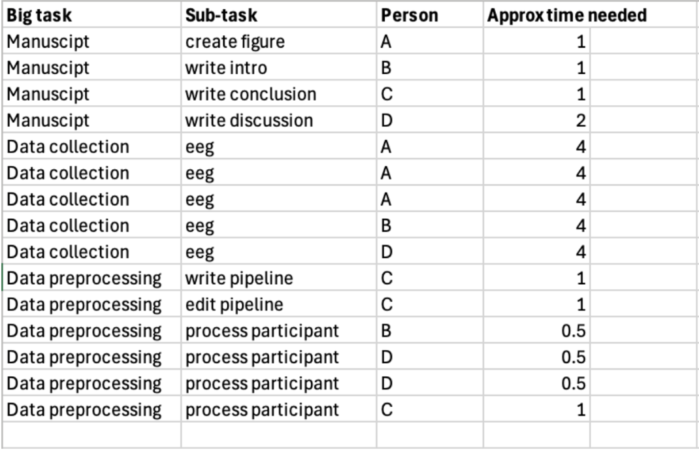

8 Excel Basics
Microsoft Excel, a spreadsheet software, is one of the most commonly used tools to manage data. In our lab, we don’t do a lot of direct work in Excel because it is more difficult to automate. That said, it is a convenient tool for recording and organizing quantitative data, and it is still very popular in many industries. This chapter is going to walk you through the basic terminologies and features of the application.

(VCL, 2025) from Google Trends data.Formulas
A formula is a set of instructions provided by the user to perform an operation. Formulas can include a variety of elements: numbers, cell references, operators, etc. A formula begins with an = sign, followed by the components that perform the desired operation.
Formula example: =AVERAGE(C2:C8) This is a formula that calls upon the function =AVERAGE, which will compute the average of the numbers occupying cells C2 to C8.
To learn more about the specific parts of a formula refer to the Microsoft’s article on formulas.
Operator Precedence
If a user combines several different operators within one formula, Excel will evaluate the equation and perform the calculations in a specific order. This is true unless the user specifies that an expression should be calculated first, in which case it would be surrounded by parentheses.
Excel will first evaluate the reference operators, (colon, single space, and comma). Then, Excel will compute negation indicated by -1. Next, Excel will evaluate percentage calculations. Last, Excel will compute exponentiation, multiplication and division, addition and subtraction, concatenation and then comparisons. To learn more refer to Microsoft’s article on operator precedence
Example of Operator Precedence: What would happen when we utilize this formula?
=-A1^2 + B1 * C1/D1 + E1 > F1, considering operator precedence?
- First, Excel calculates the exponentiation:
A1^2(4) - Apply the negation to the result:
-A1^2(-4) - Excel first divides
C1byD1: (7/13) - Excel then multiplies the result by
B1: (21/13) - Excel adds the value from
E1to the result of the previous step: (73/13) - Excel compares the final result of the left-hand side with the value in
F1. If the left-hand side is greater thanF1, it returns TRUE; otherwise, it returns FALSE.
(73/13 is roughly 5.62 which is greater than 5)
Excel returns the result:
Sorting
Sorting data is often helpful when identifying potential outliers. There are several different ways to sort data. For detailed steps, consult the official Microsoft support documentation.
PivotTables
A PivotTable is a data summarization tool which helps a user identify trends and insights from data. For example, one might want to see the average accuracy across participants and conditions in your experiment. The exact steps to create a PivotTable vary depending on the version of Excel.
PivotTable Fields
There are four field categories in a PivotTable: Field Name, Columns, Rows, and Values. In the Field Name, select the boxes for any of the fields that you want to add to the PivotTable. Fields are variables. The default setting is such that categorical information (typically participants in our case) is added to the Rows field whereas other variables (typically, our experiment’s independent variable) are added to the Column field. Numeric items (typically, our experiment’s dependent variable) are added to the Values field. You are able to manually edit these fields. Within the Values field, the dropdown menu will allow you to choose the type of summary you want (e.g., average, sum, maximum, standard deviation, etc.).
Example:
The Visual Cognition Lab is hosting a pet adoption event where the members are documenting each animal and the amount of adoption applications each animal received:

We want to determine which animal each lab member is in charge of and how many applications each of lab member needs to read. How can we visualize this efficiently… through a PivotTable!
To Create a PivotTable follow these steps:
Note: There are several different ways to make a PivotTable. For more information refer to the the Microsoft’s support site
- Select the cells that contain the data you want to visualize.

- Select Insert → Recommended PivotTable

- Excel will then present multiple options for organizing the data, select the relevant fields. In this case, we will select “Pet”, “Volunteer in Charge”, and “Application no.”

- Select OK and Excel will automatically generate the PivotTable on a new sheet.

Based on the table above, Amy is responsible for reading 3 Bunny applications, whereas Carina is responsible for reading 5 Dog applications and so on. We also see the total number of applications for each type of pet in the bottom row. There are 7 Bird applications, 14 Dog applications etc.
Another Example… One Step Further
Let’s say we want to visualize another question we have: what is the average age of each type of animal and what is the average number of applications per animal type?
Instead of looking at the sum, this time, we need Excel to compute averages.
Step by step guide (all data are rounded to 1 decimal place):
- We will begin with the same steps above to create a blank pivot table
- This time we will select “Pet”, “Age (yr)”, and “Application no.”. This would be the default result, which isn’t quite what we want.

- To change the manipulation of the numerical data, navigate to the “PivotTable Fields” box and “Values” at the bottom right. Click on the little “i”

- In the “Summarize by” box, select average and do it for both “Age (yr)” and “Application no.”

- Afterwards, you are done! Here is what the results would look like:

Though dogs are on average the oldest, they also, on average, received the most applications! Guess age is just a number :)
Further Reading
We recommend the following sources for more information on this topic:
Data Organization in Spreadsheets The Software Carpentry
Practice Questions
What is a PivotTable, and what are the four field categories that can be selected?
Use the dataset below for the following three questions:

A. Given the data set provided, what step could be taken to use a pivot table to look at the average amount of time each person is spending on all their tasks?
B. How would you figure out the total time spent on each of the sub-tasks across the whole lab?
C. What would you do if you needed to figure out the longest approximate time of a single task for the dataset?